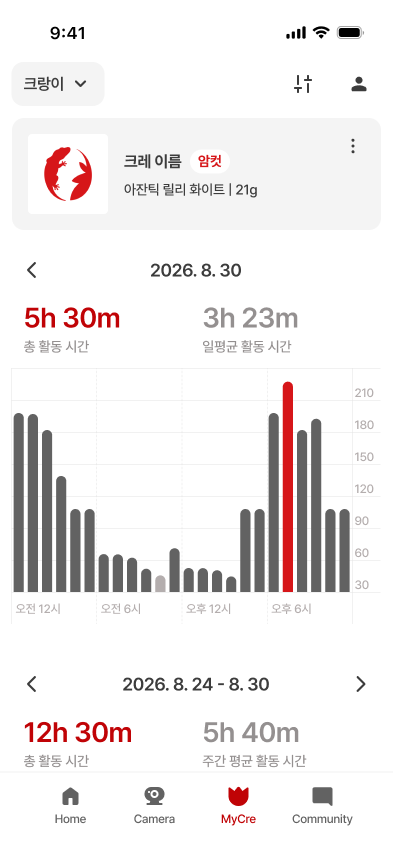
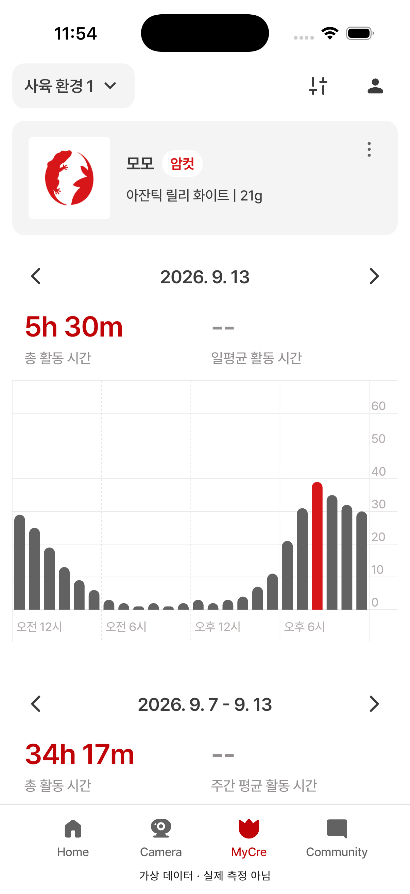

06 · MyCre 본문
06 상단·일간 기본 배치 승인 · 01~05 기본 배치 승인 / 드롭다운 그림자 보류
개체 카드·성별 배지·일간 요약·그래프를 비교합니다. 앱은 신규 시뮬레이터 캡처이며 수치는 가상 데이터입니다.
그래프 아래 간격은 양쪽 모두 40pt입니다. 약 4pt의 절대 위치 차이를 설명하고 현재 배치 수용을 확인했습니다. 주간 그래프 전체는 다음 별도 검수 대상입니다.
수정 완료: 요청하신 관측 완료 여부 안내문과 여백을 제거했습니다. 새 캡처에서 주간 날짜·총합·평균 항목이 잘리지 않고 보입니다. 평균 --와 시간당 최대 60분 기준은 유지합니다. 아래 가상 데이터 안내는 QA 전용입니다.
Figma 원본 · 393pt
06 · 수정 후 앱 · 402pt
수정 전 화면 · 검수 범위와 다음 확인사항